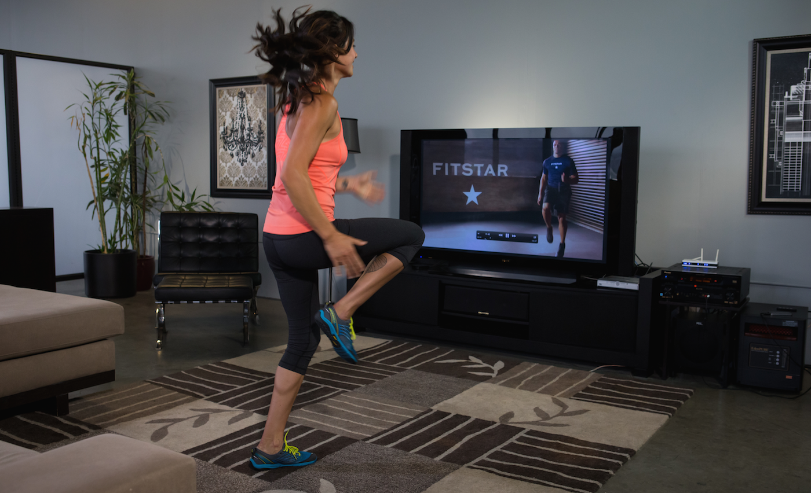

-
4 · 15 · 2014 | Fuel
How to Blend Up the Best Green Smoothie
By Lori Rice — FitStar Contributor Green smoothies have redefined healthy drinks by challenging the guidelines of what should be eaten and what should be sipped. Many people can’t quite embrace the idea of enjoying their leafy greens sweet and blended versus savory and sautéed. In case you’ve tried adding...
Keep Reading
-
4 · 12 · 2014 | Fitness
Why High Intensity Training Should Become Part of Your Routine
 By Judi Brown — FitStar Contributor Spring is here and many of us are thinking about getting in summer shape, so those fitness routines are in full swing. This means hours and hours of cardio, right? Ugh. Not only does that seem overwhelming, time-consuming, and difficult to stick with, but...
Keep Reading
-
4 · 11 · 2014 | FitStar News, Freestyle Sessions
Get a Low Impact Workout with Rock Steady
We’re all trying to find a little balance in our lives – why not start with Rock Steady, our latest Premium Freestyle Session? This 20-minute workout focuses on building strong balance and stability – key foundations for any athletic movement, while also acting as a great way to offset long...
Keep Reading
-
4 · 10 · 2014 | Fitness, Healthy Lifestyle
Wellness Links of the Week
Welcome to FitStar’s weekly roundup of wellness links. This week: a GOT-inspired workout, foods that make you happier and a baked buffalo wings recipe. 1. Game of Thrones Season 4 debuted last week week and we know a Lannister always does his reps! Try this workout and others inspired by...
Keep Reading
-
4 · 8 · 2014 | Fuel
Benefits of a High Protein Breakfast
By Lori Rice — FitStar Contributor My journey through the ups and downs of healthy eating has led me to a lot of high carbohydrate breakfasts. It’s always been complex carbs like oatmeal, whole wheat toast and fruit, but insignificant amounts of protein only made an appearance in a dollop...
Keep Reading
-
4 · 3 · 2014 | Fitness, Healthy Lifestyle
Wellness Links of the Week
It’s Thursday and that means it’s time for more helpful wellness links. This week: eating for that healthy glow, protecting produce from wilt, the positive power of laughter and spring cleaning. 1. Wait a minute, you’re saying that diet can help give you a natural glow? Count us in! Check...
Keep Reading
-
4 · 1 · 2014 | FitStar News
Announcing Invisiweights
 Here at FitStar, we are VERY serious about health and take pride in being on the cutting-edge of fitness technology. Soon, we’ll be debuting a much-requested expansion to our Programs which will feature equipment, such as dumbbells and bands, to really amp-up your workouts. But today, we’re pumped to reveal our...
Here at FitStar, we are VERY serious about health and take pride in being on the cutting-edge of fitness technology. Soon, we’ll be debuting a much-requested expansion to our Programs which will feature equipment, such as dumbbells and bands, to really amp-up your workouts. But today, we’re pumped to reveal our...
Keep Reading
-
3 · 29 · 2014 | Fuel
10 Tips For Eating Healthy On A Budget
 By Darya Rose — FitStar Advisor 1) Cook at home. The most important change I made to save money was to turn cooking at home into my default option rather than rely on neighborhood eateries as my go-to cop out. Eating out is expensive, no matter which way you cut...
By Darya Rose — FitStar Advisor 1) Cook at home. The most important change I made to save money was to turn cooking at home into my default option rather than rely on neighborhood eateries as my go-to cop out. Eating out is expensive, no matter which way you cut...
Keep Reading
-
3 · 27 · 2014 | Fitness, Healthy Lifestyle
Wellness Links of the Week
Welcome to FitStar‘s weekly wellness link roundup. This week: get to know your greens, get sleeping, get moving and get happy. 1) Most everyone agrees that salad is a healthy meal choice. Mix up your bowl with EatingWell’s “Salad Greens Buyer’s Guide,” which features nine great greens. 2) The bad...
Keep Reading